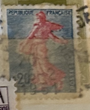
| SOURCE | TITLE| IMAGE MATCH | click to source page |
| eBay | France #YT1233 MNH 1960 Semeuse Piel Type I [941] | eBay | 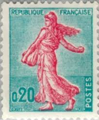 |
| Alamy | Vintage, French, postcard depicting a woman, contemplating a basket. 1900 Stock Photo - Alamy | 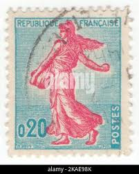 |
| Alamy | FRANCE - CIRCA 1960: stamp printed by France, shows plane MS760 “Paris”, circa 1960 Stock Photo - Alamy | |
| Alamy | France Postage Stamp - Sower of Piel Stock Photo - Alamy | 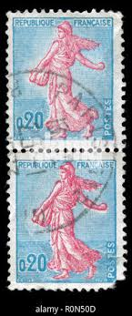 |
| allnumis.com | 20 Francs - Sower of Piel (Type I), Marianne-Liberté-Sabine-Semeuse - France - Stamp - 49181 | 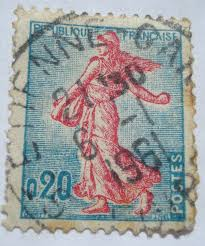 |
| Amended: French Sower Series. Not an expert but I believe these are from 1906 onwards. I think the surcharges are around 1920s There were so many types that I've not the time | 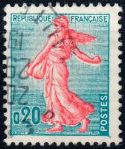 | |
| allnumis.com | 20 Francs - Sower of Piel (Type II), Marianne-Liberté-Sabine-Semeuse - France - Stamp - 47563 | 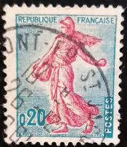 |
| Colnect | Stamp: Sower of Piel (type II) (France(Semeuse lined background) Yt:FR 1233a 📮 | 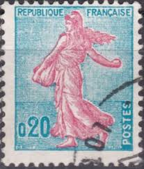 |
| Shutterstock | 6+ Thousand Circa 1960 Royalty-Free Images, Stock Photos & Pictures | Shutterstock | |
| Redbubble | Vintage Liberty Red Lady France Postage Stamp" Poster for Sale by red-amber65 | Redbubble | 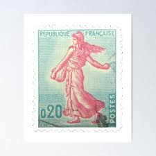 |
| iStock | Albanian Postage Stamp Stock Photo - Download Image Now - Albania, Coat Of Arms, Extreme Close-Up - iStock | 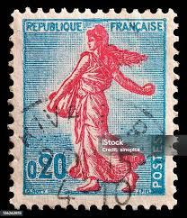 |
| Alamy | Postage stamp france hi-res stock photography and images - Page 11 - Alamy | 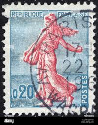 |
| Shutterstock | 60 Semeuse Royalty-Free Images, Stock Photos & Pictures | Shutterstock | 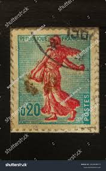 |
| Delcampe | France - stamp 2-8 - France, used, utilisé | 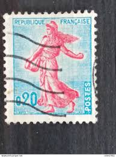 |
| Alamy | Marianne french republic hi-res stock photography and images - Alamy | |
| eBay | France Republic Postage 0.20 | eBay | 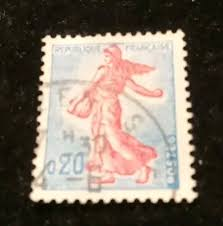 |
| ebid.net | France 1960 Seed Sower 0,20f Used Stamp on eBid United States | 217171895 | 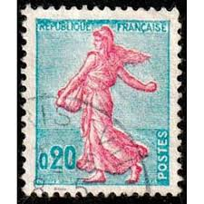 |
| Old-Stamps.com | Republique Française / 1963 | 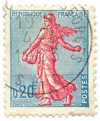 |
| Stamp Community Forum | French Stamp Of Red Marianne Sowing With Green Background And 0 20 - Stamp Community Forum | 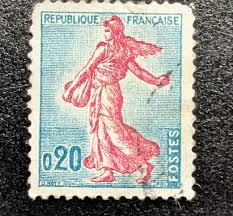 |
| eBay | France - 1960 New Values | eBay | 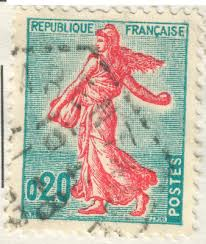 |
| Alamy | FRANCE - 1960: A stamp printed in France, depicts Marianne is a national emblem of France Stock Photo - Alamy | 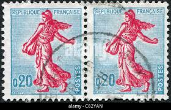 |
| Shutterstock | 80 Sower Time Royalty-Free Images, Stock Photos & Pictures | Shutterstock | 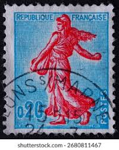 |
| Shutterstock | Karnal Haryana India -august 8th 2025-closeup Stock Photo 2674846777 | Shutterstock | 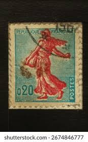 |
| eBay | Republique Francaise Postes /France Postage Stamps(3ea) | eBay | 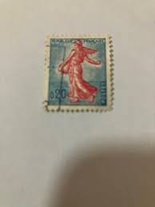 |
| Etsy | Vintage Dutch 2 Cent Stamps - Etsy | 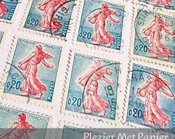 |
| eBay | FRANCE 138 - The Sower "1903 Rose" (pb55115) | eBay | 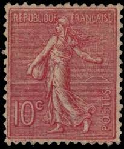 |
| Find Your Stamps Value | Find Your Stamps Value online: no philatelic skills required to find a stamp's worth! |  |
| eBay | French Pre-Decimal Postage Stamps for sale | eBay | 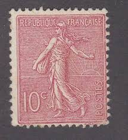 |
| eBay | Mint Hinged French Stamps 1921-1930 Year of Issue for sale | eBay | 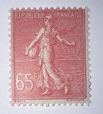 |
| HipStamp | France 138 VFU N908-3 | Europe - France & Colonies, General Issue Stamp / HipStamp | 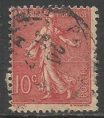 |
| eBay | FRANCE # 152 Used Clean & Fresh! ('25 SCV $9.50) | eBay | 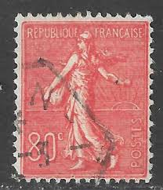 |
| nordfrim.com | Buy France 1924 - YT 203 - Cancelled | 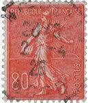 |
| eBay | 1875 VENEZUELA 1 REAL VERMILION USED INVERT OVERPRINT SCT.46a MI.21I | eBay | 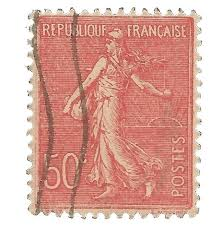 |
| eBay | Travelstamps: 1922 France Stamps Scott #151 - 75c Sower Mint MOGH | eBay | 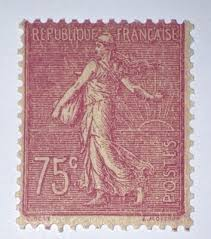 |
| Alamy | Antique postcard france hi-res stock photography and images - Page 7 - Alamy | 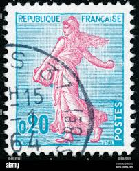 |
| eBay | France,1906-20 / Mariane / SC166 / Used | eBay |  |
| eBay | FRENCH ALGERIA AFRICA COLONIS "CONSTANTINE" CANCEL USED STAMP LOT (ALG 463) | eBay | 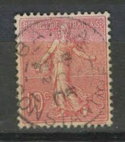 |
| eBay | FRANCE "80c SOWER" #152 MH CV$27+ (FR139)* | eBay | 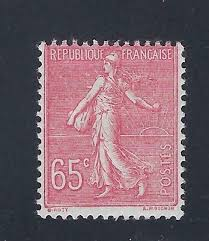 |
| nordfrim.com | Buy France 1903 - YT 129 - Mint | 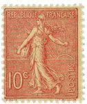 |
| brumstamp | France 1960 Sower/ Marianne/ Ship/ Boat/ Sail/ Definitives/ Additional Values 3v set n45080 | 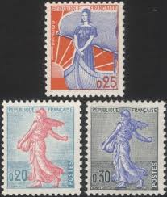 |
| eBay | T12-137) 1906-21 Europe France mix of 19 5c to 2F | eBay | 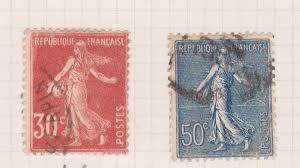 |
| HipStamp | France #146 50C Sower, Vermon Stamp used F | Europe - France & Colonies, General Issue Stamp / HipStamp | 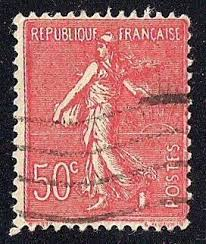 |
| Redbubble | Vintage Liberty Red Lady France Postage Stamp" Greeting Card for Sale by red-amber65 | Redbubble | 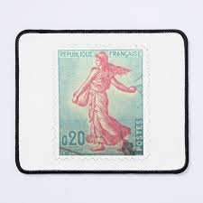 |
| eBay | France Republic Postage Stamps o20 | eBay | 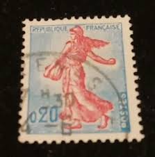 |
| Shutterstock | 4+ Hundred Post Sowing Royalty-Free Images, Stock Photos & Pictures | Shutterstock | 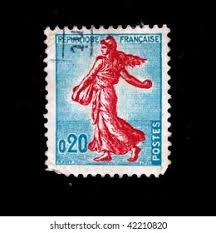 |
| eBay | Travelstamps: France Stamps Scott #138 “Sower” Mint OG Lightly Hinged | eBay | 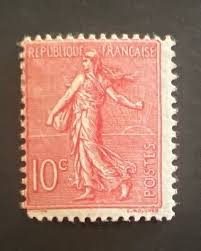 |
| eBay | France stamps 1903 YV 133 MLH VF | eBay | 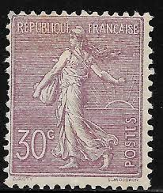 |
| HipStamp | Browse Listings / HipStamp | 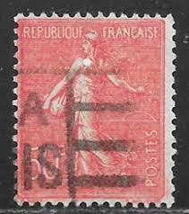 |
| Alamy | Cancelled postage stamp printed by France, that promotes International Colonial Exhibition in Paris in 1931, circa 1930 Stock Photo - Alamy | 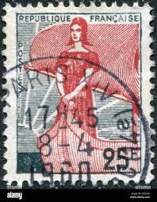 |
| Find Your Stamps Value | Value of republique rwandaise 30c stamps | 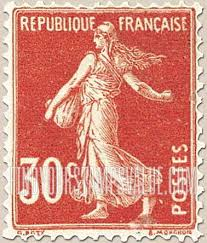 |
| eBay | 36 MNH France stamps 1960-1963, some plate blocks, see individual pics CV $17.00 | eBay | 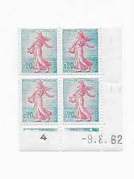 |
| eBay | FRANCE # 152 MNH OG tiny smudge at top right ('22 SCV $52.50) | eBay | 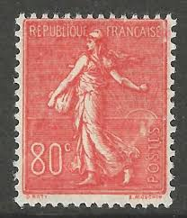 |
| eBay | France 1903 25c Scott# 141 Numbered Gutter Pair Mint Original Gum Hinged RARE 💥 | eBay | 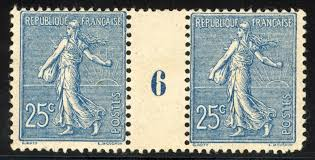 |
| Stampedia | stampedia FRANCE STAMP catalog | 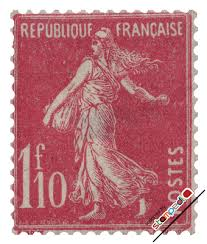 |
| eBay | Perfin France Semeuse Used Stamp A19P52F211 | eBay | |
| eBay | Travelstamps: France Stamps Scott #146 - 50c “Sower” Mint MOGH | eBay | |
| HipStamp | France SC#146 50c Semeuse Lignée (1926) Used | Europe - France & Colonies, General Issue Stamp / HipStamp | |
| eBay | Travelstamps: 1903-1938 France Stamps Scott # 143 45c, Violet Mint MOGH. | eBay | |
| Je dois les garder ??? REPUBLIQUE FRANCAISE ន MAS JOSTEA POSTES RUPUSLIDUR мИРАКОи-ПВАЖАНЯ TRANCAIA REPUBLAQUE FRANCAISE 10.3 R051 10 TRANCAISE REPUBLIQUE POSTES REPIBLIQUI RANCAISE 10 10% 510 REPUBLIQUF TRANCAISE 05 REPUBLIDUE REPUBIDUE-FRANCAISE ... | ||
| Shutterstock | Karnal Haryana India -august 8th 2025-closeup Stock Photo 2674847579 | Shutterstock |